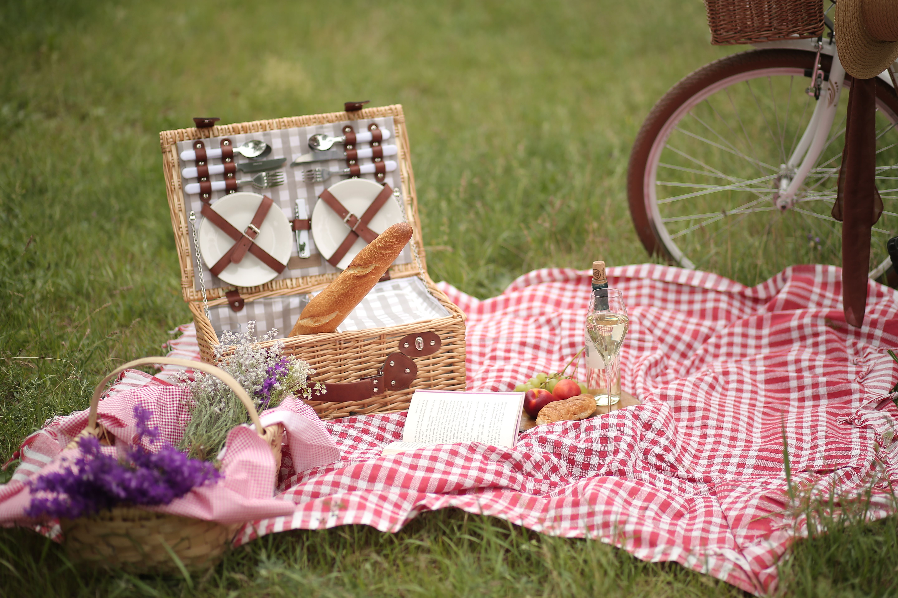
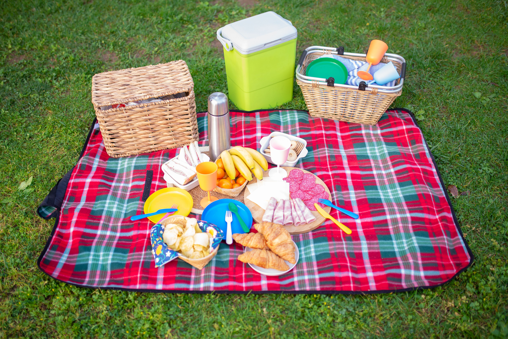

Sunetele naturii
Ascultă sunetul păsărilor pe care le-am putea auzi în timpul unui picnic în parc.
JURNAL DE ACTIVITATE / EDIȚIA 26
O zi în aer liber, mâncare bună și câteva lucruri importante pe care trebuie să le pregătim.

Pentru picnic am ales un loc liniștit într-un parc, cu multă iarbă și copaci care ne pot oferi umbră. Înainte de plecare, verificăm vremea și pregătim toate lucrurile de care avem nevoie.
Ideea zilei:
Lăsăm locul la fel de curat cum l-am găsit.

Ascultă sunetul păsărilor pe care le-am putea auzi în timpul unui picnic în parc.
Un scurt videoclip care surprinde atmosfera relaxantă a unui picnic în natură.